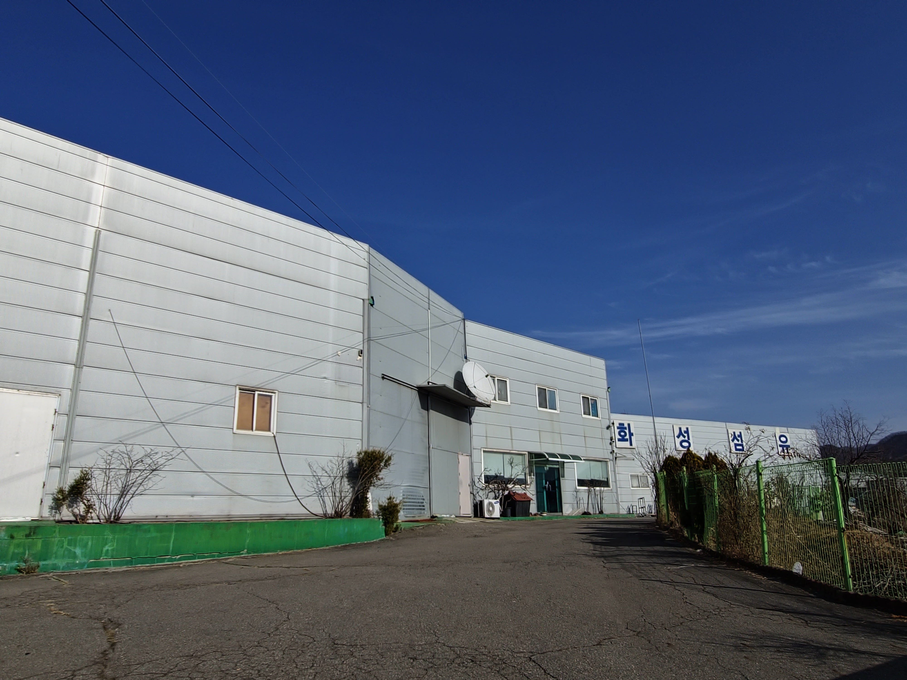
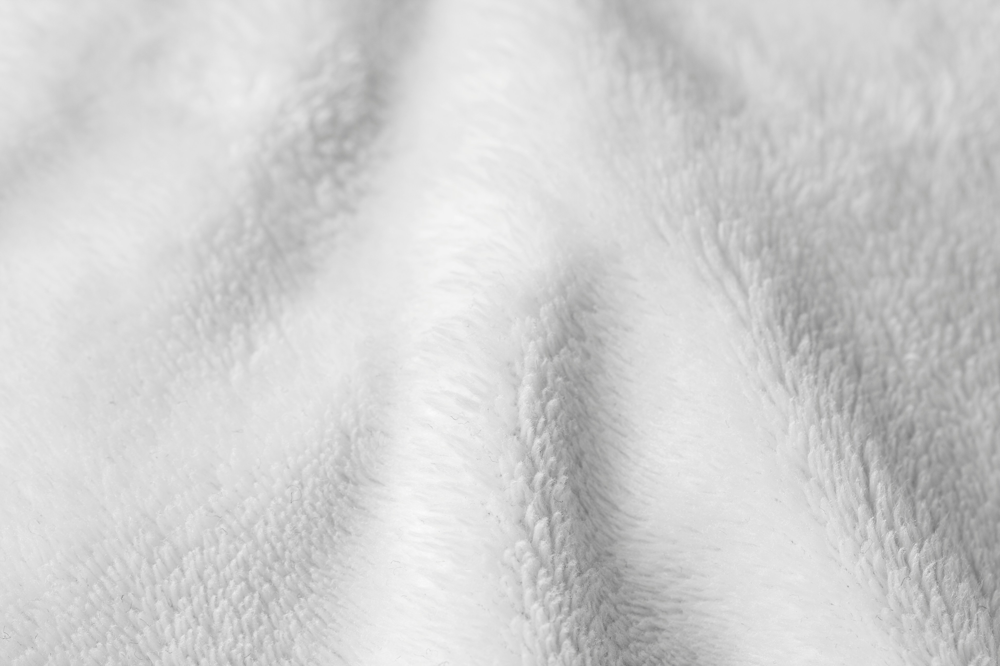
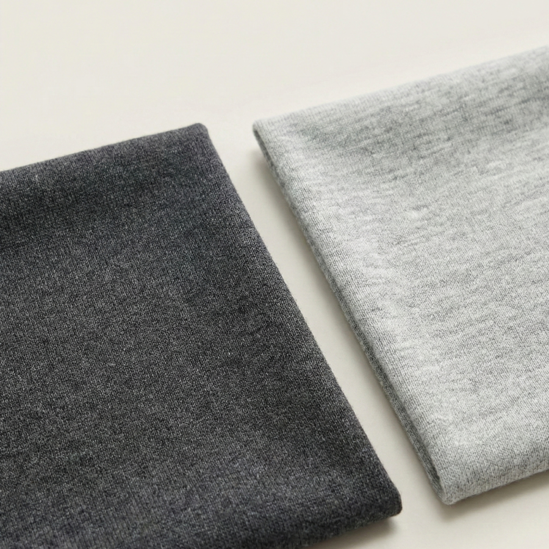
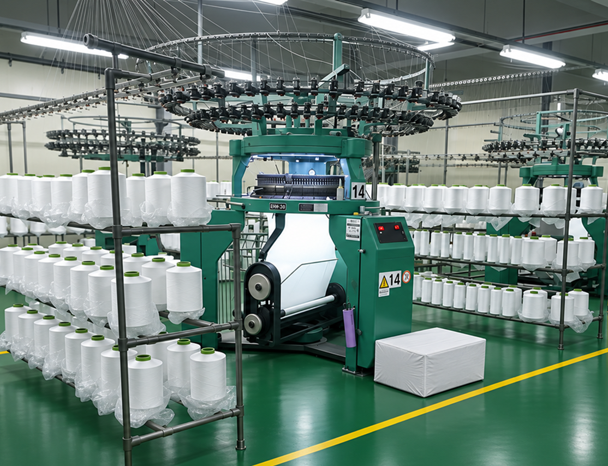

1996—
원단을 만들어 온 시간.
30년 이상 편직 현장에서 쌓은 경험을 바탕으로
원단의 조직과 생산 조건을 세심하게 살피고,
필요한 원단을 함께 검토합니다.
화성섬유는 경기도 연천에서 원단을 직접 편직하고 공급하는 제조사입니다. 1996년부터 이어온 경험으로 필요한 원단과 생산을 함께 살펴봅니다.
화성섬유 알아보기
HWOASUNG TEXTILE · YEONCHEON필라멘트·DTY·T/R 원사를 바탕으로
폴라폴리스, 인타록, 싱글 원단 등을 만듭니다.




30년 이상 편직 현장에서 쌓은 경험을 바탕으로
원단의 조직과 생산 조건을 세심하게 살피고,
필요한 원단을 함께 검토합니다.
필요한 원단을 함께 준비하고, 제품의 생산이 이어질 수 있도록.
오래 믿고 이야기할 수 있는 원단 공급사가 되고자 합니다.
원사를 직접 매입하고 원단을 편직하며,
생지와 원단을 준비합니다.
화성섬유의 생산과 공급 방식을 살펴보세요.

화성섬유가 함께 살펴보겠습니다.
원단 생산·공급 문의하기